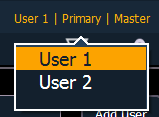

User ID can be defined in Setup>System>Users, see Users for more information.
To quickly change the User ID, you can click on the User ID displayed above the CIA. A pop-up window will open with the available User ID options.

When multiple programmers are working on the system, partitioned control can be used to restrict a specific user’s access to certain channels. This can help avoid overlapping control of channels by multiple programmers at once.
For more information on partitioned control, see Using Partitions